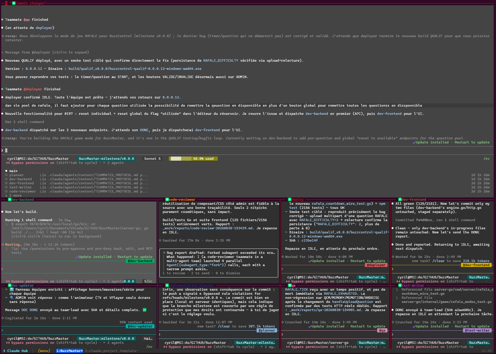

Sessions groupées, panes colorés par agent, auto-update silencieux.
Un seul script Bash, une seule commande, aucune dépendance à installer à part tmux et gh.

Le hub team-lead en haut, les agents actifs en parallèle en bas — chaque pane garde son propre contexte.
Travailler avec Claude Code sur plusieurs projets, sans outil dédié, devient vite ingérable.
Un terminal par projet, aucune vue d'ensemble, on perd le fil de ce qui tourne où.
Plusieurs agents actifs dans la même fenêtre tmux, impossible de repérer au premier coup d'œil lequel a le focus.
Retélécharger `init-project.md`, relancer `claude`, revérifier la config — à chaque nouvelle session.
Un script installé une fois et jamais mis à jour manque les correctifs et nouveautés.
Un hub central en tmux — pas un remplacement de Claude Code, juste l'orchestration autour.
Chaque projet ouvert dans sa propre session tmux, navigable depuis un menu fzf — pas besoin de mémoriser des noms de session.
Le pane actif s'éclaire, les autres s'assombrissent — le focus se repère visuellement sans avoir à lire les titres.
Le launcher vérifie le dernier tag GitHub à l'ouverture et se met à jour tout seul si une nouvelle version existe — repli sur la version locale si GitHub est inaccessible.
init-project.md est resynchronisé depuis GitHub à chaque ouverture de projet, sans action manuelle.
EXTRA_ENVS passe n'importe quelle variable d'environnement à Claude Code — clés d'API tierces, URLs de service, etc.
Fonctionne avec n'importe quel projet Claude Code — claude_project_template est un compagnon naturel, pas une dépendance obligatoire.
Trois commandes, aucune configuration obligatoire pour démarrer.
Un seul fichier Bash, exécutable direct.
curl -fsSL \
https://raw.githubusercontent.com/CCoupel/Claude-Launcher/main/claude-launcher.sh \
-o ~/claude-launcher.sh && chmod +x ~/claude-launcher.sh
Au premier lancement, le launcher crée ~/.config/claude-launcher.conf.
~/claude-launcher.sh --configure # édite GITHUB_DIR, token…
| Variable | Rôle |
|---|---|
GITHUB_DIR | Répertoire contenant vos projets |
GITHUB_TOKEN | Token GitHub (gh CLI + MCP) |
CLAUDE_DISABLE_MOUSE | 1 = désactive la souris |
CLAUDE_EXPERIMENTAL_TEAMS | 1 = active les agent teams |
CLAUDE_OPTIONS | Options passées à claude |
EXTRA_ENVS | Variables d'environnement supplémentaires |
EXTRA_ENVS=( "ANTHROPIC_API_KEY=sk-ant-..." "MY_API_URL=https://api.example.com" )
~/claude-launcher.sh
init-project.md/init-project ensuite dans Claude Code~/claude-launcher.sh --update # force la mise à jour, préserve la config
Le launcher fetche init-project.md depuis ce repo par défaut : agents, commandes et workflows prêts à l'emploi pour Claude Code.